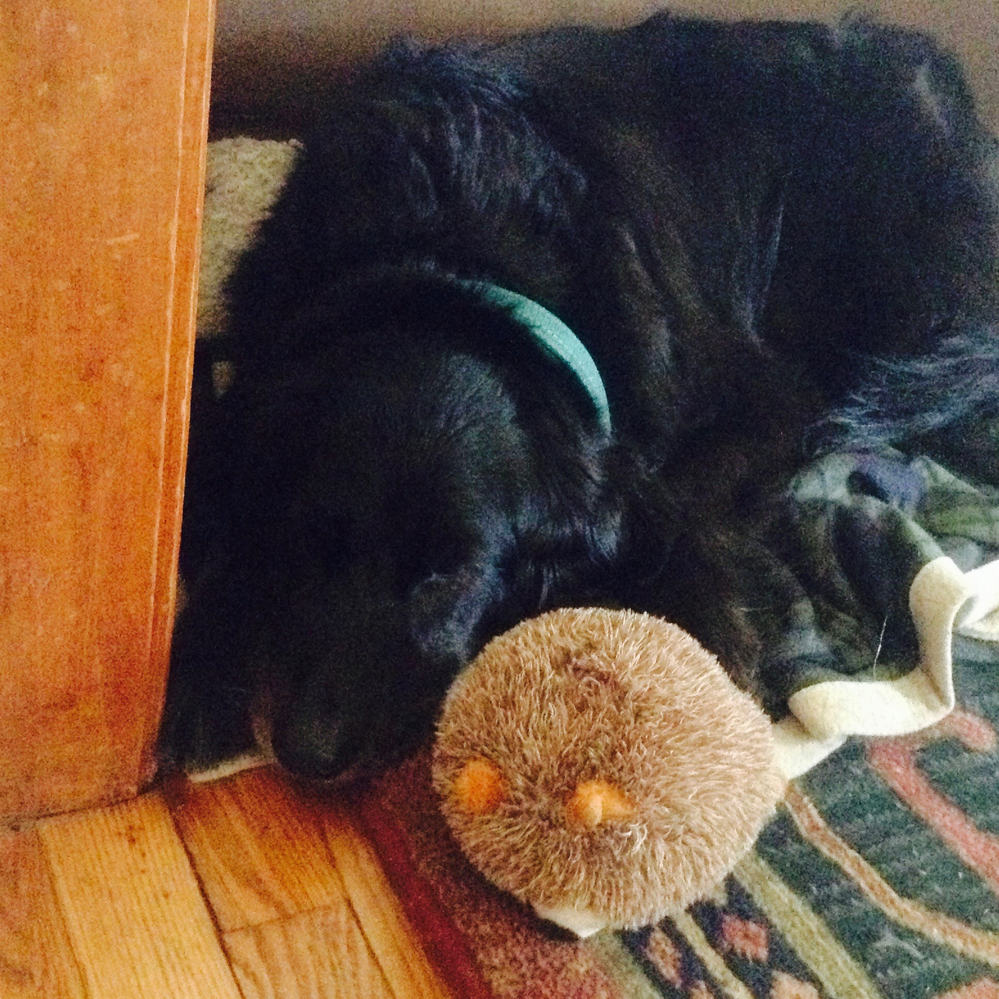

Sadie was the best dog. We all referred to her as “the dog” because she was our one and only. Having her in our life was like winning the lottery and finding the pot of gold at the end of the rainbow every day for 4550 days. She was better than any dog that a person could dream up.
We adopted her as a 12-week old puppy from an animal shelter in South Orange, New Jersey. She was sick with kennel cough when we adopted her and she was the last puppy left of a litter of 8 pups and the runt. It was love at first sight and we were lucky because another family was higher up on the list to adopt her but did not show up so we were allowed to take her home. The shelter named her Sheila but us kids were really into The Beatles at the time and renamed her Sexy Sadie after the song.
She loved watching tv ( mainly begging for snacks while I watched tv). She was my netflix and chill buddy; we watched The Office, 30 Rock, Parks and rec, Community, House, The West Wing, The Newsroom, The Big Bang Theory, Cosmos, Sherlock, just to name a few (12 years of tv watching). I watched all these shows with the dog intermittently pawing me until I gave her some of my snacks.
She loved all food and would beg for a bite of whatever you were eating. She was very strategic in her begging and knew who (the weakest links) she should sit next to at the kitchen table to get scraps. She knew the sound of a potato chip bag opening and she would come running no matter where she was to sit at your feet before you even get the first chip in your mouth.
We took her on off leash hikes and walks in Mills reservation and she would always try to be in front of her flock of humans. She did not like to be too far ahead and never roamed far enough to be out of sight. she would run ahead on the path just enough to be the leader but if there were a few stragglers she would run to the back to encourage them to catch up. It was almost like she was doing a headcount of her men and it was cute.
She was also a dog who carried the weight of the world on her shoulders. Despite being a 50% golden retriever she was not happy go lucky, she worried and was super sensitive. She was also a creature of habit dog, she would bark to go upstairs when it was bedtime (10:30). I used to also joke that she was the only dog that needed an emotional support human. She was a dog prone to stress. She was afraid of thunderstorms and if it happened at night she would run under my dad’s night stand and try to squish herself under it. I remember once when she was a puppy, she got scared of something and ran under the kitchen buffet but got stuck and we had to pull her out. She was afraid of plastic bags blowing in the wind and garbage cans rolling on their side and hated bulky waste day. I think part of her anxious personality was from the fact she was taking care of us. She was our guardian and protecting 6 humans is a stressful job.
That was the thing, she was very sensitive and empathic to our moods. She was really good at looking after her flock. After I bombed the GRE’s the first time, I came home sad and stressed out and this dog would not leave me alone. She followed me from room to room and when I laid down she could not stop nudging me with her nose almost to cheer me up. She was not a normal cuddler but on that day when I needed her, she became one for me.
She was this all knowing super being that took care of us for almost 12.5 years. She was the dog.
